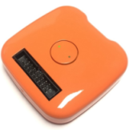

gForcePro/gForcePro+ Armband and gForceOct Module User Guide
August 28th, 2020
Overview
gForcePro/gForcePro+ Armband or gForceOct module is a smart wearable Human Interface Device for gesture recognition. It recognizes gestures according to the sEMG signals of human forearms, and as well as calculates orientation data in quaternions or Euler Angles from its built-in 9-axis IMU.
Comparing with the other gesture recognition devices that are based on the computer vision technology, gForce Armband has the advantage of no dependency of embient light, no strictness with angle, much lower energy and much lower cost.
gForcePro+

gForceOct

Note:
gForcePro is discontinued. For new purchase orders, please choose gForcePro+.
Turning on/off
-
Turn on
When gForcePro/gForcePro+ or gForceOct module Armband is off, its green LED light will be off. To turn it on, simply press and hold the button in the middle of its main block for about 1 second til the green LED is turned on.
When gForcePro/gForcePro+ Armband or gForceOct module starts to power on, it will vibrate for about 0.2 second. Once it is successfully powered up, the green LED light flashes at a frequency of 1/4HZ with 2 seconds on and 2 seconds off.
Make sure the armband has sufficient power, otherwise re-charge it with a micro USB line.
-
Turn off
When gForcePro/gForcePro+ Armband or gForceOct module is on, pressing and holding the button for about 5 seconds and then releasing will turn it off. The green LED being off indicates the device has been turned off successfully.
Note:
If gForcePro/gForcePro+ Armband or gForceOct module is not in use, please turn it off. Right now the auto-low-power mode is not implemented yet.
Re-charging
gForcePro/gForcePro+ Armband or gForceOct module is equipped with Li-ion battery (200mAh). The USB port on the main block is used for battery re-charging.
During re-charging, the red light LED on the main block is on. Re-charging will maximally take 2 hours, and after re-charging completes, the red light LED is turned off.
Note:
gForcePro/gForcePro+ Armband or gForceOct module is NOT designed to work during re-charging, as this brings in electrical noise which contaminates the weak EMG biometric signals.
Other Status Indication
-
After successfully connecting with a BLE central device (e.g. gForceJoint, gForceDongle or any other BLE central device), the green LED light flashes at 5HZ when any data (e.g. quaternion, gesture or raw data) switch is on.
-
The device will vibrate for about 100ms when a gesture is recognized.
Gesture Training
-
gForcePro
gForcePro supports user gesture training with help of OTrain desktop APP. Refer to OTrain for more details.
-
gForcePro+/gForceOct
gForcePro+/gForceOct uses gForce APP to train user gestures. Refer to gForce APP for more details.
Fetch EMG/Qurternion/... Data
-
Via SDK
Use gForceSDKCXX, gForceSDKCSharp, gForceSDKPython to fetch EMG data, etc. See SDK list & gForceSDK manual for help.
-
Via oym8CHWave
Refer to oym8CHWave for more details.
User Guide
Click here for gForcePro+/gForceOct user guide in PDF format.